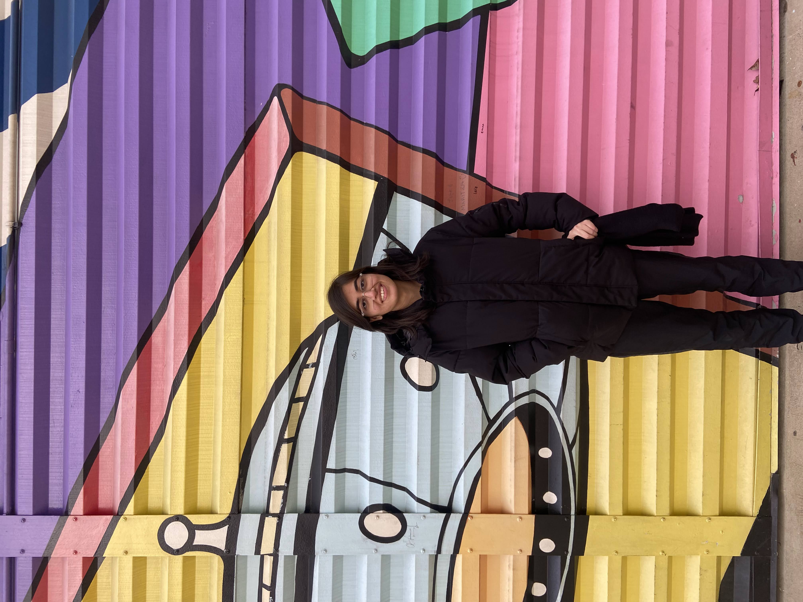

|
Eshika Pathak Graduate Student, Electrical and Computer Engineering, Carnegie Mellon University Hi, I'm an Electrical and Computer Engineering graduate student focusing on Artificial Intelligence and Machine Learning at Carnegie Mellon University. My journey in engineering began at the Indian Institute of Technology (IIT) in Gandhinagar, India. My academic pursuits are deeply intertwined with hands-on research in various domains, including autonomous systems, optimization, and reinforcement learning. I thrive in challenging environments, constantly learning and seeking innovative solutions to complex problems. Join me as I explore the intersection of technology and real-world applications, striving to make impactful contributions through my research and projects! |

|
Projects |
|
|

|
Autonomous Vehicle Safe Control in the Presence of Self-Seeking Humans Advisor: Prof. Yorie Nakahira, Control and Learning Group, Carnegie Mellon University (August 2023 - Present) Designing and experimentally validating optimal autonomous vehicle policies by accounting for humans’ self-seeking behaviors and ensuring better safety and performance trade-offs compared to deterministic worst-case safe control techniques and equilibrium-based stochastic methods. |
 |
Automating Microbial Growth Detection and Monitoring Using TDLAS Advisor: Prof. Arup Lal Chakraborty, Photonic Sensors Lab, IIT Gandhinagar (August 2022 - April 2023) Proposed and conducted experiments to detect the growth of E.coli using a quantum cascade laser and tunable diode laser absorption spectroscopy (TDLAS). Devised an intelligent baseline-selection algorithm, eliminating manual data processing. |
 |
Wearable Foot Plantar Pressure Monitoring and Analysis System Advisor: Prof. Uttama Lahiri, IRACS Lab, IIT Gandhinagar (January 2021 - May 2021) Engineered an end-to-end system to collect data and process gait characteristics from piezoelectric force-sensing resistive sensors placed in shoe insoles. Optimized the system to reduce latency from over a minute to a few seconds. |
Teaching
Teaching Assistant for Machine Learning
Teaching Assistant for Digital Signal Processing |
Blogs / Miscellaneous
The Future of AI in Autonomous Systems
A Journey Through Computational Lithography |